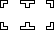

<HTML>
<HEAD>
<TITLE>Tetris Attack using javascript</TITLE>
<META http-equiv=Content-Type content="text/html; charset=iso-8859-1">
<STYLE type=text/css>

.v10 				{font-family: Verdana, Arial, Helvetica, sans-serif; font-size: 10pt}
.v08 				{font-family: Verdana, Arial, Helvetica, sans-serif; font-size: 8pt}
.formtext		{font-family: Verdana, Arial, Helvetica, sans-serif; font-size: 10pt; border: none; text-align: right}
.formbutton	{font-family: Verdana, Arial, Helvetica, sans-serif; font-size: 10pt}

</STYLE>
</HEAD>
<BODY bgColor=#ffffff class="v10">

<script src="//ajax.googleapis.com/ajax/libs/jquery/1.8.3/jquery.min.js"></script>
<script type="text/javascript" src='remix.js'></script>
<script type="text/javascript" src='buffer-loader.js'></script>
<script language="javascript">


<!--

// Remix globals.  I need four colors / tracks
// SND 15, 16, 7, 4
var apiKey = 'WOUHTN44BMS5SMPF2';
var trackIDs = ['TRTXBSY14165472E97', 'TRNOMVO141654877C6', 'TRIXKNU14165490C70', 'TREEQSM14165497489'];
var trackURLs = ['audio/snd-0.mp3', 'audio/snd-1.mp3', 'audio/snd-2.mp3', 'audio/snd-3.mp3']

var remixer;
var player;
var filteredPlayer;
var tracks = [null, null, null, null];
var context = new webkitAudioContext();
remixer = createJRemixer(context, $, apiKey);

// Tetris globals
var boardHeight = 12;
var boardWidth  = 6;
var numberColors = 5;
var cellSize 	= 25; // size of the blocks in pixels.  Would need to change cursor.gif too!
var boardArray 		= new Array()		// array of the colours on the board
var clearArray		= new Array()		// array to check which from which direction blocks are cleared
var clearX			= new Array()		// keeps track of block's X value which need clearing, but only after *all* the checking!
var clearY			= new Array()		// ditto for the blocks corresponding Y value
var dropArray 		= new Array()		// which columns have had items cleared/dropped (1 = something cleared, 0 = nothing in this column)
var heightArray		= new Array()		// height of first empty in column
var colorArray 		= new Array('#ffcc00','#ff3300','#0066cc','#009966','#9999cc','#990099','#999999')
var speedArray		= new Array(3000,2900,2800,2700,2600,2500,2400,2300,2200,2000)
var gameScore 		= 0
var gameLevel		= 0							// game level from 0 - 10, affects
var levelUp			= 1000					// number of marks needed to level up
var upRate			= speedArray[gameLevel]		// time between automatic lowering of block in milliseconds
var clearedBlocks = 0
var sScore			= 0							// more running score for a particular drop than successive score, but want to keep similar names!
var sDrops			= 0							// successive drops (to calculate a multiplier)
var stillPlaying	= 1							// check if game over, then stops you from moving the last block at the top from side to side!
var needDropping	= 0							// flags off if there are enough in a row to call the function to drop cells down
var cursorX			= 3
var cursorY			= 5
var nextArray		= new Array()		// next row of blocks
var blockColor 		= null					// used to check if any blocks need clearing


// sets up the board to start the game...
function mainBoard() {

	var remixIndex = 0;
    function multipleRemix(tracks, trackIDs, trackURLs) {
        // do a remix!
        remixer.remixTrackById(trackIDs[remixIndex], trackURLs[remixIndex], function(t, percent) {
            tracks[remixIndex] = t;

            consol.log(percent + "% of the track loaded...");
            if (tracks[remixIndex].status == 'ok') {
                // Do the next one!


                remixIndex = remixIndex + 1;
                if (remixIndex < tracks.length) {
                    console.log('Loaded track ' + (remixIndex) + ', running analysis...');
                    multipleRemix(tracks, trackIDs, trackURLs);
                }
                else {
                    console.log("Everything loaded, this is my jam");

				document.writeln('<div id="board" style="position:absolute; left:50; top:50; z-index:2; border: 1px none #000000">')
				document.writeln('<div id="cursor" style="position:absolute; left:0; top:0; z-index:1; border: 1px none #000000"></div>')
				document.writeln('<table border="0" cellspacing="0" cellpadding="0" class="v10"><tr>')
				document.writeln('<td>')

				  
				// I *think* that I can put my remix call here, and then call initBoard to start things...but emphasis on think.
				// Ah, no, I think need to call the entire block below here in order to make things happen


				initBoard()
				document.writeln('</td>')
				document.writeln('<td width="30">&nbsp;</td>')
				document.writeln('<td valign="top">')
				document.writeln('<table border="0" cellspacing="1" cellpadding="10" bgcolor="#666666" class="v10">')
				document.writeln('<tr bgcolor="#dddddd">')
				document.writeln('<td>Level</td><td><input type="text" name="levelText" value="0" size="3" readonly class="formtext"></td>')
				document.writeln('</tr>')
				document.writeln('<tr bgcolor="#dddddd"><td>Score</td><td><input type="text" name="scoreText" value="0" size="3" readonly class="formtext"></td></tr>')
				document.writeln('<tr bgcolor="#dddddd"><td>Blocks</td><td><input type="text" name="blocksText" value="0" size="3" readonly class="formtext"></td></tr>')
				document.writeln('<tr bgcolor="#dddddd"><td colspan="2"><div align="center"><input type="button" value="Restart" onClick="location.reload()"></div></td></tr>')
				document.writeln('</table>')
				document.writeln('</td>')
				document.writeln('</tr></table>')
				document.writeln('</div>')

				// ...just make sure you don't start with 3 in a row!
				for (i=0;i<2;++i) { 
					nextArray[i] = colorArray[Math.floor(Math.random()*numberColors)] 
				}
				var nextColor = colorArray[Math.floor(Math.random()*numberColors)]
				for (i=2;i<boardWidth;++i) {
					while(nextColor == nextArray[i-1] && nextColor == nextArray[i-2]) nextColor = colorArray[Math.floor(Math.random()*numberColors)]
					nextArray[i] = nextColor
				}
				updateCursor()
				updateScores()
				newBlock() // This one starts the game
                }               
            }
        });
    }

    multipleRemix(tracks, trackIDs, trackURLs);
} // end mainBoard


function initBoard() {

	for (i=0;i<boardWidth;++i) {

		boardArray[i] = new Array()

		clearArray[i] = new Array()

		dropArray[i] = 0

		heightArray[i] = 0

		for (j=0;j<boardHeight;++j) {

			boardArray[i][j] = '#ffffff'

			clearArray[i][j] = new Array(0,0)

		}

	}

	document.writeln('<table cellspacing="1" border="0" cellpadding="0" bgcolor="#dddddd">')	

	for (i=0;i<boardHeight;++i) {

		document.writeln('<tr>')

		for (j=0;j<boardWidth;++j) {

			document.writeln('<td id="cell' + cellNum(j,boardHeight-1-i) + '" bgcolor="#ffffff"></td>')

		}

		document.writeln('</tr>')

	}

	document.writeln('</table>')


	document.writeln('<br>Next:<br><table cellspacing="1" border="0" cellpadding="0" bgcolor="#dddddd"><tr>')

	for (i=0;i<boardWidth;++i) document.writeln('<td id="next' + i + '" bgcolor="#ffffff"></td>')

	document.writeln('</tr></table>')

}


// used to calculated a 4-digit number for each cell, e.g. (2,3) becomes 0203, (4,12) becomes 0412


function cellNum(x,y) {

	var nameStr = ""

	if (x<10) nameStr = "0"

	nameStr += x

	if (y<10) nameStr += "0"

	nameStr += y

	return nameStr

}


function updateCursor() {

	document.all.cursor.style.left = (cursorX)*(cellSize+1)-1

	document.all.cursor.style.top = (boardHeight-cursorY-1)*(cellSize+1)-1

}	


// shuffle blocks up to make way for a new 'next' row

// the new 'next' row when chosen shouldn't complete a row of 3 horizontally or vertically


function newBlock() {

	for (i=0;i<boardWidth;++i) {

	if (heightArray[i] == boardHeight) { endGame(); return false }

		for (j=heightArray[i]-1;j>=0;--j) {

			colorBelow = boardArray[i][j]

			boardArray[i][j+1] = colorBelow

			eval('document.all.cell' + cellNum(i,j+1) + '.style.backgroundColor = "' + colorBelow + '"')

		}		

		boardArray[i][0] = nextArray[i]

		eval('document.all.cell' + cellNum(i,0) + '.style.backgroundColor = "' + nextArray[i] + '"')


		var nextColor = colorArray[Math.floor(Math.random()*numberColors)]

		if (i > 1) {

			while((nextColor == boardArray[i][0] && nextColor == boardArray[i][1]) || (nextColor == nextArray[i-1] && nextColor == nextArray[i-2])) nextColor = colorArray[Math.floor(Math.random()*numberColors)]

		} else {

			while (nextColor == boardArray[i][0] && nextColor == boardArray[i][1]) nextColor = colorArray[Math.floor(Math.random()*numberColors)]

		}


		nextArray[i] = nextColor


		eval('document.all.next' + i + '.style.backgroundColor = "' + nextArray[i] + '"')

		heightArray[i] += 1

	}

	if (cursorY < boardHeight-1) cursorY += 1

	updateCursor()


	for (i=0;i<boardWidth;++i) checkIndiv(i,0)

	if (needDropping == 1) {

		dropCells()

		updateScores()

	}

	keepMoving = setTimeout('newBlock()', upRate)

}

document.onkeypress = handler;

function handler(e) {
	if (stillPlaying == 0) return;

  	var key = e.charCode;
	var chr = String.fromCharCode(key);
		
	if (chr == "l") endGame()
	if (chr == "w" && cursorY < boardHeight-1) cursorY += 1
	if (chr == "s" && cursorY > 0) cursorY -= 1
	if (chr == "a" && cursorX > 0) cursorX -= 1
	if (chr == "d" && cursorX < boardWidth - 2) cursorX += 1

	if (chr == " ") {
		needDropping = 0

		var b1 = boardArray[cursorX][cursorY]
		var b2 = boardArray[cursorX+1][cursorY]

		if (b1 == '#ffffff' && b2 == '#ffffff') {
			return
		}

		boardArray[cursorX][cursorY] = b2
		boardArray[cursorX+1][cursorY] = b1

		// ew! bit messy this bit.. if either block is a blank(white) then both columns need dropping (removeGaps()), then 
		// depending on whether it was the coloured or the white block, you choose the correct block to use checkIndiv() on.
		if (b1 == '#ffffff' || b2 == '#ffffff') {
			removeGaps(cursorX,cursorY)
			removeGaps(cursorX+1,cursorY)
		} else {
			eval('document.all.cell' + cellNum(cursorX,cursorY) + '.style.backgroundColor = "' + b2 + '"')
			eval('document.all.cell' + cellNum(cursorX+1,cursorY) + '.style.backgroundColor = "' + b1 + '"')
			checkIndiv(cursorX,cursorY)
			checkIndiv(cursorX+1,cursorY)
		}
		if (needDropping == 1) {
			dropCells()
		}
		updateScores()

	}	
	updateCursor()
}


function removeGaps(x,y) {
	var tempPos = 0
	for (j=0;j<Math.max(heightArray[x],y+1);++j) {
		if (boardArray[x][j] != '#ffffff') {
			boardArray[x][tempPos] = boardArray[x][j]
			eval('document.all.cell' + cellNum(x,tempPos) + '.style.backgroundColor = "' + boardArray[x][tempPos] + '"')		
			tempPos += 1
		}
	}

	for (j=tempPos;j<Math.max(heightArray[x],y+1);++j) {
		boardArray[x][j] = '#ffffff'
		eval('document.all.cell' + cellNum(x,j) + '.style.backgroundColor = "#ffffff"')
	}
	heightArray[x] = tempPos
	if (y < heightArray[x]) {
		checkIndiv(x,y)
	} else {
		if (heightArray[x] != 0) checkIndiv(x,heightArray[x]-1)
	}
}


function updateScores() {
	gameScore += 10*sScore
	gameLevel = Math.floor(gameScore/levelUp)
	if (gameLevel > 10) gameLevel = 10
	lowerRate = speedArray[gameLevel]	
	document.all.scoreText.value = gameScore
	document.all.levelText.value = gameLevel
	sScore = 0
}

function checkIndiv(x,y) {
	checkDirn(x,y,0,1,0)
	checkDirn(x,y,1,0,0)
}

function onBoard(x,y) {
	if (x < 0 || x > boardWidth - 1 || y < 0 || y > boardHeight - 1) {
		return 0
	} else {
		return 1
	}
}

// Using the arrays clearX, clearY in the following two functions to store which blocks need clearing
// in the main boardArray after all the checking has been done.
// Rather than writing two function with basically the same mecahnics of searching, the checkDirn combines two steps.
// First use is to check if there are enough joined in a row in any direction to clear. (whichOption = 0)
// If there are enough then the same procedure to locate these blocks is used but rather than counting.
// The function itself checks if there are enough then calls itself again only with a different option (whichOption = 1)
function checkDirn(x,y,dx,dy,whichOption) {
	if (clearArray[x][y][dirn(dx,dy)] == 1) { 
		return
	}

	var colorCount = 1
	var blockColor = boardArray[x][y]
	if (whichOption == 1) {
		var nBlocks = 1
		dropArray[x] = 1
		clearX[clearX.length] = x
		clearY[clearY.length] = y
		clearArray[x][y][dirn(dx,dy)] = 1
		eval('document.all.cell' + cellNum(x,y) + '.style.backgroundColor = "#ffffff"')
	}

	var n = 1
	while (onBoard(x+dx*n,y+dy*n) == 1) {
		if (boardArray[x+dx*n][y+dy*n] == blockColor) {
			if (whichOption == 0) colorCount += 1
			if (whichOption == 1) {
				nBlocks += 1
				dropArray[x+dx*n] = 1
				clearX[clearX.length] = x+dx*n
				clearY[clearY.length] = y+dy*n
				clearArray[x+dx*n][y+dy*n][dirn(dx,dy)] = 1
				eval('document.all.cell' + cellNum(x+dx*n,y+dy*n) + '.style.backgroundColor = "#ffffff"')
			}
			n += 1
		} else {
			break
		}
	} // end while

	n = 1
	while (onBoard(x-dx*n,y-dy*n) == 1) {
		if (boardArray[x-dx*n][y-dy*n] == blockColor) {
			if (whichOption == 0) { 
				colorCount += 1
			}
			if (whichOption == 1) {
				nBlocks += 1
				dropArray[x-dx*n] = 1
				clearX[clearX.length] = x-dx*n
				clearY[clearY.length] = y-dy*n
				clearArray[x-dx*n][y-dy*n][dirn(dx,dy)] = 1
				eval('document.all.cell' + cellNum(x-dx*n,y-dy*n) + '.style.backgroundColor = "#ffffff"')
			}
			n += 1
		} else {
			break
		}
	} // end while

	if (whichOption == 0 && colorCount >= 3) {
		checkDirn(x,y,dx,dy,1)
	}
	if (whichOption == 1) {
		sScore += nBlocks
		needDropping = 1
		console.log("Cleared a thing:  ", clearX, clearY); 
		// THIS IS WHERE THINGS HAPPEN YES YES YES
		console.log(boardArray); // YES.  This is the array of colours:  I just need to figure out how to index in to it
		// Holy shit, parallel list coordinates.  Ah well, I can work with that.
		// OK, So I need to put a very simple play beat in here
	}
}

function dirn(dx,dy) {
	if (dx == 0 && dy == 1) return 0
	if (dx == 1 && dy == 0) return 1
}

// clears blocks that need clearing and reset the clearX/Y arrays for next use
// update the number of blocks cleared; note the way clearX/Y have been filled, will lead to repeats, so need to be careful when counting
function updateBoardArray() {
	for (i=0;i<clearX.length;++i) {
		if (boardArray[clearX[i]][clearY[i]] != '#ffffff') {
			clearedBlocks += 1
		}
		boardArray[clearX[i]][clearY[i]] = '#ffffff'
		clearArray[clearX[i]][clearY[i]] = new Array()
	}
	document.all.blocksText.value = clearedBlocks
	clearX = new Array()
	clearY = new Array()
}


function dropCells() {
	sDrops += 1
	needDropping = 0
	updateBoardArray()
	for (i=0;i<boardWidth;++i) {
		if (dropArray[i] == 1) {
			var tempPos = 0
			var lowestDrop = boardHeight
			for (j=0;j<heightArray[i];++j) {
				if (boardArray[i][j] == '#ffffff' && j < lowestDrop) { 
					lowestDrop = j
				}
				if (boardArray[i][j] != '#ffffff') {
					boardArray[i][tempPos] = boardArray[i][j]
					eval('document.all.cell' + cellNum(i,tempPos) + '.style.backgroundColor = "' + boardArray[i][tempPos] + '"')	
					tempPos += 1
				}
			}

			for (j=tempPos;j<heightArray[i];++j) {
				boardArray[i][j] = '#ffffff'
				eval('document.all.cell' + cellNum(i,j) + '.style.backgroundColor = "#ffffff"')
			}
			heightArray[i] = tempPos
			dropArray[i] = 0
		}
	}
	for (i=0;i<boardWidth;++i) {
		for (j=lowestDrop;j<heightArray[i];++j) checkIndiv(i,j)

	}
	if (needDropping == 1) dropCells()
}


function endGame() {
	stillPlaying = 0
	alert('Game over!')
	clearTimeout(keepMoving)
}


mainBoard() // actually sets everything up
//lowerBlock()
//--> 
</SCRIPT>
</BODY>
</HTML>